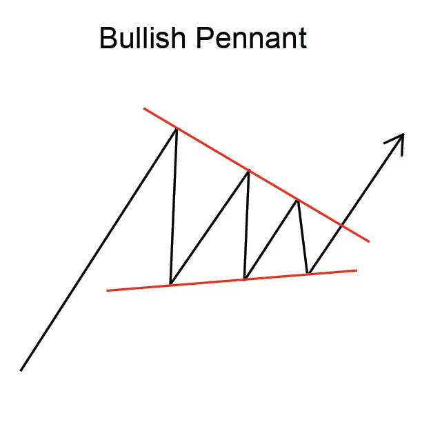

"बुलिश पेंट फ्लैग पैटर्न" एक सतत आपत्ति चार्ट पैटर्न होता है जो दो उत्थानों के बीच एक संक्षिप्त समास के पुनर्मूल्यांकन से गठित होता है।
पैटर्न का आकार अक्सर एक झंडे या ध्वज दंड के समानहूं होता है, जिससे इसका नाम पड़ा।
बुलिश पेंट फ्लैग पैटर्न स्पष्ट रूप से शक्तिशाली ऊपरी प्रवृत्ति का संकेत देता है और व्यापारी इसे व्यापार का अवसर के रूप में
इस्तेमाल करते हैं। इस पैटर्न में प्रवेश करने के लिए, व्यापारी आमतौर पर ध्वजदंड की ऊचाई के बराबर दूरी पर 'ब्रेकआउट'
की खोज करते हैं।
ध्वजदंड की लंबाई, ध्वजांकन से ध्वजदंड की शीर्ष तक की ऊचाई होती है। ध्वज की चौड़ाई,
ध्वजदंड की शीर्ष से नीचले भाग तक के ब्रेकडाउन की अवधि होती है।
हालांकि, बुलिश पेंट फ्लैग पैटर्न एक विश्वसनीय व्यापार पैटर्न नहीं है, फिर भी यह एक शक्तिशाली ऊपरी प्रवृत्ति का संकेत देता
है और व्यापारी इसे व्यापार का अवसर के रूप में इस्तेमाल करते हैं।